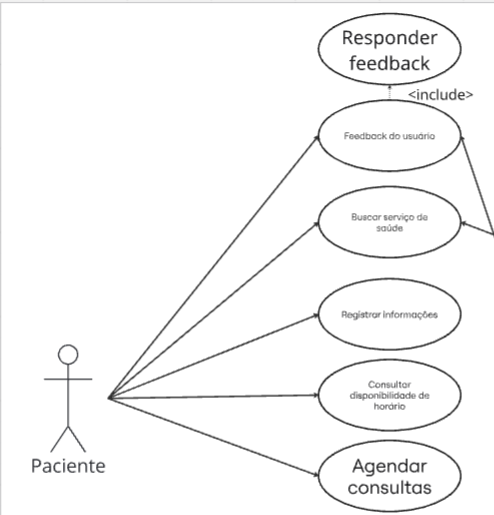
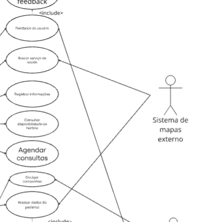
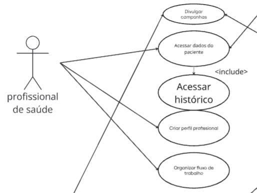

Diagrama de Casos de Uso
Tem por objetivo apresentar uma visão externa das funções e serviços que o sistema deverá oferecer aos usuários, sem se preocupar em como tais funções serão implementadas
Para este estudo, usamos como base o projeto Connect Care, um app para ajudar pessoas numa comunidade necessitada.
Atores
Os atores são papéis que um usuário desempenha com relação ao sistema. Podem ser humanos, sistemas ou dispositivos de hardware.
- Quem ou o quê utiliza o sistema?
- Quem ou o quê recebe informações do sistema?
- Quem ou o quê provê informações para o sistema?
- Em que lugar da empresa o sistema será utilizado?
- Quem ou o quê suporta e mantém o sistema?
- Que outros sistemas utilizam este sistema?
Os atores identificados na Connect Care são:
- Pacientes: utilizam diretamente do sistema para buscar informações, além de realizar um registro manual.
- Sistema de informações: usa das informações do paciente para acessar, pelo sistema, pontos de interesse.
-
Profissional de saúde: acessa a plataforma para acessar exames e detalhes do Paciente.
-
Agentes comunitários: usam o sistema para identificar áreas prioritárias.
-
ONG: usam o sistema para divulgar e gerenciar iniciativas.
-
Administrador: garante a segurança da plataforma, usando o sistema para obter informações sobre o app no geral.
Casos de Uso
Usando o formato “Verbo no infinitivo + Objeto”, identificamos os seguintes casos de uso:
Paciente
- Registrar com informações pessoais;
- Buscar serviços de saúde;
- Realizar agendamento de consultas;
- Consultar disponibilidade de horários;
- Realizar feedback da consulta;

Sistema de informações
- Coletar dados do paciente;
- Buscar postos de saúde próximos do paciente;
- Indicar campanhas existentes;

Profissional de saúde
- Gerenciar atendimentos de pacientes;
- Acessar informações de pacientes;
- Criar perfil profissional;
- Organizar fluxo de trabalho;
- Visualizar agenda de consultas;
- Acessar histórico do paciente;
- Atualizar prontuário do paciente;

Ongs
- Divulgar campanhas;
- Divulgar iniciativas de saúde;
- Administrar iniciativas;
Agentes comunitários
- Registrar visitas domiciliares;
- Criar relatórios de condições de saúde;
- Identificar áreas prioritárias.
Administrador
- Integrar novas funcionalidades;
- Atualizar informações de parceiros;
- Responder feedback do usuário;
- Monitorar indicadores de desempenho;

Diagrama no miro

:::::
Especificações de caso de uso
Abaixo está a especificação completa de cinco casos de uso selecionados para detalhamento.
1. Realizar Agendamento de Consultas
1.1 Breve Descrição
Para o seguinte experimento, utilizamos de um exemplo geral: um adulto levando seu filho à um médico.
Permite ao Paciente, através do aplicativo, localizar postos de saúde próximos, verificar a disponibilidade de médicos por especialidade (pediatria) e efetuar o agendamento de uma consulta para seu filho. O sistema deve confirmar o agendamento ou informar sobre a indisponibilidade.
1.2 Atores
- Ator Principal: Paciente
- Atores Secundários: Sistema de Localização (GPS) e Profissional de saúde (recebe a confirmação).
2. Fluxo de Eventos
2.1 Fluxo Principal
O caminho padrão para um agendamento bem-sucedido.
| Passo | Ação do Ator (Paciente) | Ação do Sistema |
|---|---|---|
| 1 | O Paciente acessa a função de "Agendamento de Consultas" no aplicativo. | |
| 2 | O Paciente informa a especialidade desejada (pediatria) e a localização atual ou CEP. | O Sistema [RN01] exibe um mapa com os postos de saúde próximos (até 5km) e o tempo de deslocamento estimado. |
| 3 | O Paciente seleciona o posto de saúde de sua preferência. | |
| 4 | O Paciente seleciona o médico desejado e o dia do agendamento. | O Sistema consulta a agenda do médico selecionado e [RN02] exibe os horários disponíveis. |
| 5 | O Paciente seleciona o horário desejado. | |
| 6 | O Sistema solicita a confirmação dos dados (posto, médico, data, hora, nome do paciente/filho). | |
| 7 | O Paciente confirma o agendamento. | O Sistema [RN03] reserva o horário na agenda do médico, [Pós-condição 1] registra o agendamento no sistema e [Pós-condição 2] envia uma notificação de confirmação. |
| 8 | O Sistema exibe a tela de confirmação do agendamento com o número de protocolo. |
2.2 Fluxos Alternativos
Variações do fluxo principal que não são erros.
-
[FA01] Troca de Localização (iniciado no passo 2.1.2)
- 2.2.1.1 O Paciente insere manualmente um novo endereço ou CEP diferente do atual.
- 2.2.1.2 O Sistema recalcula e [RN01] exibe os postos de saúde próximos à nova localização.
- 2.2.1.3 O fluxo retorna ao passo 2.1.3.
-
[FA02] Indisponibilidade na Agenda (iniciado no passo 2.1.4)
- 2.2.2.1 O Paciente seleciona um dia sem horários disponíveis.
- 2.2.2.2 O Sistema exibe a mensagem "Não há horários livres neste dia" e sugere datas próximas com disponibilidade.
- 2.2.2.3 O fluxo retorna ao passo 2.1.4 (seleção de dia).
2.3 Fluxos de Exceção
Erros e falhas.
-
[FE01] Postos de Saúde Indisponíveis (iniciado no passo 2)
- 2.3.1.1 Se o Sistema [RN01] não encontrar postos de saúde em um raio de 5km (ou na especialidade desejada) OU se todos os postos próximos estiverem com a agenda lotada.
- 2.3.1.2 O Sistema exibe a mensagem de erro: "Não foi possível encontrar postos de saúde próximos com horários livres para a especialidade de Pediatria."
- 2.3.1.3 O Sistema encerra o caso de uso.
-
[FE02] Campo Obrigatório Incompleto (iniciado em qualquer passo)
- 2.3.2.1 O Paciente tenta avançar sem preencher um campo obrigatório (Ex: Especialidade, Médico, Horário).
- 2.3.2.2 O Sistema exibe a mensagem de erro: "Informação incompleta. Por favor, preencha o campo [Nome do Campo] para continuar."
- 2.3.2.3 O fluxo permanece no passo atual.
-
[FE03] Horário Selecionado Ocupado (iniciado no passo 7)
- 2.3.3.1 Durante o processamento da reserva, outro Paciente simultaneamente reservou o mesmo horário.
- 2.3.3.2 O Sistema cancela a reserva atual e exibe a mensagem: "O horário selecionado não está mais disponível. Por favor, escolha outro horário."
- 2.3.3.3 O fluxo retorna ao passo 2.1.4 (seleção de dia).
3. Requisitos Especiais
- O agendamento deve ser otimizado para dispositivos móveis (Android e iOS) diferentes.
- O sistema deve consultar a localização do usuário com permissão explícita (GPS).
- O tempo de resposta para a consulta de disponibilidade (passo 2.1.4) não deve exceder 2 segundos.
4. Regras de Negócio
- [RN01] A busca por postos de saúde deve priorizar a distância física (raio de 5km) e a especialidade desejada (pediatria, por exemplo).
- [RN02] A disponibilidade de horários é determinada pela agenda médica real e deve ser exibida em tempo real.
- [RN03] Após a confirmação (passo 7), o horário é imediatamente bloqueado na agenda do médico.
- [RN04] O Paciente só pode agendar consultas para ele próprio ou dependentes cadastrados em seu perfil, não podendo realizar consultas para outrem sem cadastro de informações prévio.
5. Precondições
- O Paciente deve estar autenticado no aplicativo.
- O serviço de localização (GPS) do Paciente deve estar ativo (se a busca for por proximidade).
- O Paciente deve ter dependentes (filho, padrasto, mãe, etc) cadastrados no sistema (Referência RN04).
6. Pós-condições
- [Pós-condição 1] O agendamento é registrado no sistema de trabalho do profissional de saúde.
- [Pós-condição 2] Uma notificação de confirmação é enviada ao Paciente e ao Profissional de Saúde.
- [Pós-condição 3] O horário reservado é marcado como indisponível na agenda do médico.
7. Pontos de Extensão
- No passo 7, este caso de uso pode ser estendido por "Gerar Lembrete de Consulta".
- No passo 2, este caso de uso pode ser estendido por "Consultar Histórico de Agendamentos".
2. Criar perfil profissional
1.1 Breve Descrição
O caso de uso "Criar Perfil Profissional" tem como objetivo permitir que o usuário registre suas informações pessoais, experiências e habilidades em um perfil organizado dentro da plataforma.
O ator deseja criar e registrar seu perfil profissional, enquanto o sistema oferece os meios para coletar, salvar e disponibilizar essas informações de forma estruturada.
1.2 Atores
- Ator Principal: Profissional da Saúde - responsável por iniciar a ação de criar o perfil profissional
- Atores Secundários:
- Sistema de autentificção - responsável por validar a identidade do profissional antes da criação do perfil.
2. Fluxo de Eventos
2.1 Fluxo Principal
| Passo | Ação |
|---|---|
| 2.1.1 | O Profissional da Saúde acessa a opção Criar Perfil Profissional. |
| 2.1.2 | O Sistema exibe o formulário de criação de perfil. |
| 2.1.3 | O Profissional da Saúde preenche suas informações profissionais. |
| 2.1.4 | O Sistema valida os dados informados. |
| 2.1.5 | O Sistema registra o novo perfil no banco de dados. |
| 2.1.6 | O Sistema confirma a criação do perfil exibindo uma mensagem de sucesso. |
2.2 Fluxos Alternativos
[FA01] – Edição opcional de informações adicionais
Origem: Passo 2.1.3
1. O Ator opta por adicionar informações complementares ao perfil (ex.: certificações, idiomas).
2. O Sistema exibe os campos opcionais correspondentes.
3. O Ator preenche os campos desejados.
Retorno: O fluxo volta ao passo 2.1.4.
[FA02] – Indicação de experiência profissional prévia
Origem: Passo 2.1.3
1. O Ator decide incluir experiências profissionais anteriores.
2. O Sistema exibe os campos para cargo, instituição, período e descrição da atividade.
3. O Ator adiciona uma ou mais experiências.
Retorno: O fluxo volta ao passo 2.1.4.
[FA03] – Inserção de links externos
Origem: Passo 2.1.3
1. O Ator opta por inserir links relevantes (ex.: LinkedIn, portfólio, site profissional).
2. O Sistema apresenta os campos para adicionar URLs .
3. O Ator insere um ou mais links.
4. O Sistema verifica se os links possuem formato válido.
Retorno: O fluxo volta ao passo 2.1.4.
2.3 Fluxos de Exceção
[FE01] – Dados obrigatórios ausentes
Origem: Passo 2.1.4
1. O Sistema identifica que campos obrigatórios não foram preenchidos.
2. O Sistema exibe mensagem informando os campos faltantes e solicita correção.
Retorno: O fluxo retorna ao passo 2.1.3.
[FE02] – Formato de dados inválido
Origem: Passo 2.1.4
1. O Sistema detecta dados em formato inválido (ex.: e-mail incorreto, telefone incompleto).
2. O Sistema destaca os campos inválidos e orienta o ator a corrigir.
Retorno: O fluxo retorna ao passo 2.1.3.
[FE03] – Falha ao registrar o perfil no banco de dados
Origem: Passo 2.1.5
1. O Sistema não consegue salvar o perfil devido a uma falha na operação de banco de dados.
2. O Sistema informa o erro e solicita que o ator tente novamente mais tarde.
Retorno: O fluxo é encerrado sem criar o perfil.
[FE04] – Tamanho de arquivo excedido (caso exista upload)
Origem: Passo 2.1.3
1. O Sistema detecta que um arquivo enviado (ex.: foto) excede o tamanho permitido.
2. O Sistema exibe mensagem de erro e rejeita o upload.
Retorno: O fluxo retorna ao passo 2.1.3.
3. Requisitos Especiais
-
Compatibilidade com dispositivos móveis:
O sistema deve permitir a criação do perfil profissional em smartphones e tablets, mantendo layout responsivo e usabilidade adequada. -
Requisitos de performance:
O formulário de criação do perfil e a validação dos dados devem ser executados rapidamente pelo sistema.
4. Regras de Negócio
[RN01] Todos os campos obrigatórios do perfil devem estar preenchidos para permitir a criação do perfil profissional.
[RN02] O número de registro profissional (ex.: CRM, COREN, CRP) deve seguir o formato definido pelo respectivo conselho e ser validado antes do registro do perfil.
[RN03] Cada profissional pode possuir apenas um perfil ativo por CPF cadastrado.
[RN04] Em caso de integração externa, o sistema deve verificar o registro profissional em até 5 segundos; após esse tempo, a verificação deve ser considerada indisponível.
5. Pré-condições
- O Profissional da Saúde deve estar autenticado no sistema.
- O ator deve ter sido previamente validado como um profissional da saúde legítimo (ex.: registro em conselho profissional confirmado).
- O sistema deve estar conectado ao banco de dados.
- O ator deve possuir um cadastro básico ativo (ex.: CPF e e-mail verificados).
6. Pós-condições
- Um novo perfil profissional é criado e armazenado no banco de dados.
- O ator passa a ter acesso às funcionalidades que dependem de um perfil profissional ativo.
3. Registrar Informações
1.1 Breve Descrição
Este caso de uso permite que o Paciente registre informações relevantes à sua saúde no aplicativo, tais como sintomas, medições (pressão, glicemia, etc.), evolução de uma condição ou anotações pessoais.
O objetivo é manter um histórico organizado que pode ser consultado posteriormente pelo usuário ou compartilhado com profissionais de saúde.
1.2 Atores
- Ator Principal: Paciente
- Atores Secundários:
- Profissional de saúde (acessa as informações caso tenha permissão)
2. Fluxo de Eventos
2.1 Fluxo Principal
O caminho padrão para um registro de informações bem-sucedido.
| Passo | Ação do Ator (Paciente) | Ação do Sistema |
|---|---|---|
| 1 | O Paciente acessa a função "Registrar Informações" no aplicativo. | O Sistema exibe um formulário com os campos disponíveis para registro. |
| 2 | O Paciente seleciona o tipo de informação (ex.: Sintomas). | O Sistema exibe campos específicos conforme o tipo escolhido. |
| 3 | O Paciente preenche os campos necessários. | O Sistema valida os dados preenchidos. |
| 4 | O Paciente anexa fotos, documentos ou exames (opcional). | O Sistema realiza o upload e verifica a integridade dos arquivos. |
| 5 | O Paciente confirma o registro. | O Sistema salva o registro, gera um identificador único e exibe a confirmação. |
2.2 Fluxos Alternativos
[FA01] Registro sem Anexos (iniciado no passo 4)
- O Paciente decide não anexar arquivos.
- O Sistema continua para a etapa de confirmação.
- O fluxo retorna ao passo 5.
[FA02] Categoria Personalizada (iniciado no passo 2)
- O Paciente escolhe “Outro tipo de informação”.
- O Sistema solicita o nome da nova categoria.
- O Sistema registra a categoria e retorna ao passo 3.
2.3 Fluxos de Exceção
[FE01] Campo Obrigatório Incompleto
- O Paciente tenta prosseguir sem preencher um campo obrigatório.
- O Sistema exibe:
“Informação incompleta. Preencha o campo [Nome do Campo] para continuar.” - O fluxo permanece no passo atual.
[FE02] Falha no Upload de Arquivo
- O Sistema não consegue processar o arquivo anexado.
- O Sistema exibe:
“Não foi possível enviar o arquivo. Tente novamente.” - O usuário pode tentar novamente ou prosseguir sem anexos.
[FE03] Falha ao Salvar Registro
- O Sistema não consegue salvar o registro.
- O Sistema exibe:
“Ocorreu um erro ao salvar suas informações. Tente novamente mais tarde.” - O caso de uso é encerrado.
3. Requisitos Especiais
- Deve funcionar em modo offline, sincronizando quando houver conexão.
- Anexos aceitos: imagens, PDF e documentos de até 20 MB.
- Os dados devem ser criptografados.
- Interface adaptada para dispositivos móveis.
4. Regras de Negócio
- RN01: O usuário só pode registrar informações do próprio perfil ou de dependentes.
- RN02: Cada tipo de informação possui campos obrigatórios específicos.
- RN03: Todos os arquivos anexados devem ser verificados quanto à integridade.
- RN04: O registro só é validado após confirmação explícita do usuário.
5. Precondições
- O Paciente deve estar autenticado no sistema.
- O dispositivo deve ter espaço disponível para anexos.
- O Paciente deve ter permissão para registrar informações de dependentes.
6. Pós-condições
- O registro é salvo no sistema.
- O histórico do paciente é atualizado.
- Anexos são vinculados ao registro criado.
4. Responder Feedback do Usuário
1.1 Breve Descrição
Este caso de uso permite que o Administrador ou a equipe responsável pela plataforma visualize, analise e responda aos feedbacks enviados pelos Usuários (pacientes, profissionais de saúde, agentes comunitários ou ONGs).
O objetivo é garantir que sugestões, reclamações ou elogios recebidos possam ser avaliados e respondidos, melhorando a qualidade dos serviços oferecidos e fortalecendo o canal de comunicação.
1.2 Atores
- Ator Principal: Administrador do Sistema
- Atores Secundários:
- Usuário que enviou o feedback
- Banco de Dados de Feedback
- Sistema de Notificações (Push/E-mail)
2. Fluxo de Eventos
2.1 Fluxo Principal
O processo padrão para responder a um feedback é descrito abaixo:
| Passo | Ação do Ator (Administrador) | Ação do Sistema |
|---|---|---|
| 1 | O Administrador acessa a função “Gerenciar Feedback” no painel administrativo. | O Sistema lista todos os feedbacks pendentes de resposta. |
| 2 | O Administrador seleciona um feedback para visualizar. | O Sistema exibe detalhes: tipo, descrição, data, autor e categoria. |
| 3 | O Administrador escreve uma resposta para o feedback selecionado. | O Sistema valida os campos obrigatórios (texto da resposta). |
| 4 | O Administrador confirma o envio da resposta. | O Sistema registra a resposta no banco de dados. |
| 5 | — | O Sistema envia uma notificação ao Usuário informando que seu feedback foi respondido. |
| 6 | — | O Sistema altera o status do feedback para “Respondido”. |
2.2 Fluxos Alternativos
[FA01] Filtrar Feedback (iniciado no passo 1)
- 2.2.1 O Administrador utiliza filtros (categoria, pendente, respondido, data).
- 2.2.2 O Sistema atualiza a lista conforme o filtro aplicado.
- 2.2.3 O fluxo retorna ao passo 1.
[FA02] Resposta Rascunho (iniciado no passo 3)
- 2.2.1 O Administrador decide não enviar a resposta imediatamente.
- 2.2.2 O Sistema salva como “Rascunho”.
- 2.2.3 O fluxo termina.
2.3 Fluxos de Exceção
[FE01] Sistema de Notificações Indisponível (iniciado no passo 5)
- 2.3.1 O Sistema não consegue enviar a notificação ao Usuário.
- 2.3.2 O Sistema salva a resposta, mas exibe a mensagem:
“Notificação não enviada. Será reenviada automaticamente mais tarde.” - 2.3.3 O fluxo continua normalmente.
[FE02] Campos Obrigatórios Incompletos (iniciado no passo 3)
- 2.3.1 O Administrador tenta salvar a resposta sem preencher o texto.
- 2.3.2 O Sistema exibe:
“Preencha o campo ‘Resposta’ para continuar.” - 2.3.3 O fluxo retorna ao passo 3.
[FE03] Falha no Banco de Dados (iniciado no passo 4)
- 2.3.1 O Sistema encontra erro ao salvar a resposta.
- 2.3.2 O Sistema exibe:
“Erro ao salvar a resposta. Tente novamente mais tarde.” - 2.3.3 O caso de uso termina sem alterar o status do feedback.
3. Requisitos Especiais
- O sistema deve garantir que a resposta seja salva mesmo que a notificação falhe.
- A interface deve permitir visualizar feedbacks por ordem cronológica.
- A resposta deve ser registrada com data, hora e identificação do Administrador.
- O sistema deve permitir anexar arquivos na resposta (opcional).
4. Regras de Negócio
- RN01: Apenas Administradores podem responder feedbacks.
- RN02: Após respondido, o feedback não pode ser apagado, apenas arquivado.
- RN03: A resposta deve ficar visível para o Usuário na área “Meus Feedbacks”.
- RN04: O sistema deve registrar o log de todas as alterações no feedback.
5. Precondições
- O Administrador deve estar autenticado no sistema.
- Deve existir ao menos um feedback pendente ou arquivado.
- O sistema de banco de dados deve estar disponível para leitura.
6. Pós-condições
- A resposta fica registrada no histórico do feedback.
- O status do feedback é atualizado para “Respondido”.
- Uma notificação é enviada ao Usuário (quando possível).
5. Consultar Disponibilidade de Horário
1.1 Breve Descrição
Este caso de uso permite ao Paciente consultar, em tempo real, a disponibilidade de horários de atendimento oferecidos por Profissionais de Saúde ou unidades parceiras cadastradas no ConnectCare. A partir desta funcionalidade, o paciente pode localizar serviços de saúde, aplicar filtros de busca e visualizar os horários disponíveis, preparando-se para realizar o agendamento em seguida. Nenhuma reserva é efetivada neste caso de uso.
1.2 Atores
- Paciente - ator principal
- Profissional de Saúde - ator secundário
2. Fluxo de Eventos
2.1 Fluxo Principal
Este caso de uso é iniciado quando o Paciente escolhe a opção “Buscar Serviços de Saúde”.
2.1.1 O sistema apresenta filtros de busca, como tipo de atendimento, localização e especialidade.
2.1.2 O Paciente preenche e confirma os filtros desejados.
2.1.3 O sistema sugere unidades de saúde e profissionais compatíveis com a busca realizada [RN02].
2.1.4 O Paciente seleciona a unidade de saúde ou profissional exibido na lista de resultados.
2.1.5 O Paciente escolhe a opção “Consultar Disponibilidade de Horário”.
2.1.6 O sistema acessa a agenda do profissional/unidade e verifica se os dados estão registrados e atualizados [RN01][FE02].
2.1.7 O sistema apresenta a grade com os horários disponíveis para os próximos dias.
2.1.8 O Paciente visualiza as opções e seleciona um horário disponível.
2.1.9 O sistema registra a consulta realizada no log.
2.1.10 O caso de uso é encerrado, encaminhando o horário selecionado para o caso de uso “Agendar Consulta”.
2.2 Fluxos Alternativos
2.2.1 [FA01] Ajustar Filtros de Busca
No passo 2.1.4 o Paciente decide alterar os filtros utilizados.
2.2.1.1 O sistema exibe novamente a área de filtros. 2.2.1.2 O Paciente ajusta os filtros e confirma. 2.2.1.3 O sistema apresenta nova lista de unidades e profissionais.
(Retorna ao passo 2.1.4)
2.2.2 [FA02] Sugerir Atendimento Alternativo
No passo 2.1.7 o Paciente não encontra horários satisfatórios.
2.2.2.1 O sistema identifica indisponibilidade ou dificuldade de acesso. 2.2.2.2 O sistema apresenta serviços alternativos, como campanhas móveis ou visitas domiciliares.
(O fluxo pode encerrar ou o Paciente pode seguir para o agendamento alternativo)
2.3 Fluxos de Exceção
2.3.1 [FE01] Horários Esgotados
No passo 2.1.7 o sistema identifica que não existe disponibilidade para o dia solicitado. O sistema exibe mensagem informando indisponibilidade e oferece visualização de datas futuras. O fluxo retorna ao passo 2.1.7 ou encerra.
2.3.2 [FE02] Dados do Profissional Não Registrados
No passo 2.1.6 o sistema identifica ausência ou inconsistência na agenda cadastrada. O sistema informa a indisponibilidade e sugere ao Paciente escolher outra unidade. O caso de uso é encerrado.
3. Requisitos Especiais
3.1 A funcionalidade deve oferecer desempenho adequado mesmo em dispositivos simples ou com baixa conectividade. 3.2 O sistema deve permitir mapear e exibir unidades de saúde geograficamente próximas ao Paciente.
4. Regras de Negócio
4.1 [RN01] Cadastro de Disponibilidade O Profissional de Saúde deve registrar previamente sua agenda para que o sistema possa exibir os horários disponíveis.
4.2 [RN02] Sugestões Personalizadas As sugestões de unidades ou profissionais devem considerar dados básicos do Paciente, como idade, condições preexistentes e sintomas informados.
5. Precondições
5.1 O Paciente deve estar autenticado no sistema. 5.2 As unidades de saúde e profissionais devem ter agendas e dados atualizados no sistema.
6. Pós-condições
6.1 O Paciente conhece os horários disponíveis para o atendimento desejado. 6.2 O sistema registra a consulta realizada no log de auditoria.
7. Pontos de Extensão
7.1 Nos passos 2.1.3 e 2.2.1.3 este caso de uso pode ser estendido por “Buscar Serviço de Saúde”. 7.2 Após o passo 2.1.8 este caso de uso pode ser estendido por “Agendar Consulta”.
1. Nome do Caso de Uso
Acessar Histórico de Saúde
1.1 Breve Descrição
Este caso de uso permite que o Profissional de Saúde visualize o histórico clínico do Paciente.
O histórico inclui informações como: consultas anteriores, exames feitos, diagnósticos registrados, campanhas ou iniciativas das quais o paciente participou e visitas domiciliares realizadas.
O objetivo é fornecer ao profissional uma visão consolidada e confiável do prontuário do paciente, permitindo atendimento mais rápido e preciso.
Algumas informações podem vir de sistemas externos (ex.: sistema de mapas, campanhas vinculadas a ONGs, registros de agentes comunitários).
1.2 Atores
- Ator Principal: Profissional de Saúde
- Atores Secundários:
- Sistema de Armazenamento de Histórico
- Administrador (libera permissões)
- Agente Comunitário de Saúde (pode ter gerado parte do histórico)
2. Fluxo de Eventos
2.1 Fluxo Principal
O fluxo abaixo descreve o caminho padrão para consultar o histórico com sucesso.
| Passo | Ação do Ator (Profissional de Saúde) | Ação do Sistema |
|---|---|---|
| 1 | O Profissional acessa a função “Acessar Histórico” no aplicativo ou sistema web. | O Sistema valida a sessão do profissional e exibe o campo de busca por paciente. |
| 2 | O Profissional informa o identificador do paciente (CPF, nome completo ou ID do sistema). | O Sistema consulta a base de dados e exibe os pacientes correspondentes. |
| 3 | O Profissional seleciona o paciente desejado. | O Sistema exibe o resumo do histórico clínico (consultas, exames, diagnósticos, iniciativas). |
| 4 | O Profissional seleciona um item específico do histórico (consulta, exame, registro de iniciativa). | O Sistema exibe os detalhes completos do item selecionado. |
| 5 | O Profissional finaliza a visualização. | O Sistema registra o acesso no log de auditoria. |
2.2 Fluxos Alternativos
[FA01] Paciente não encontrado (iniciado no passo 2)
- 2.2.1 O Profissional insere um nome incompleto ou CPF com erro.
- 2.2.2 O Sistema exibe a mensagem “Paciente não encontrado. Verifique os dados e tente novamente.”
- 2.2.3 O fluxo retorna ao passo 2.
[FA02] Histórico parcial (iniciado no passo 3)
- 2.2.1 O Sistema identifica que parte dos dados do paciente está em um sistema externo.
- 2.2.2 O Sistema exibe um aviso: “Algumas informações estão sendo carregadas de sistemas externos.”
- 2.2.3 O fluxo continua normalmente.
2.3 Fluxos de Exceção
[FE01] Falha de Comunicação com o Sistema de Histórico (iniciado no passo 3)
- 2.3.1 O Sistema não consegue acessar a base de dados.
- 2.3.2 O Sistema exibe: “Erro ao acessar o histórico. Tente novamente mais tarde.”
- 2.3.3 O caso de uso é encerrado.
[FE02] Profissional sem permissão (iniciado no passo 1)
- 2.3.1 O Sistema detecta que o profissional não tem acesso ao prontuário do paciente.
- 2.3.2 O Sistema exibe: “Acesso negado. Entre em contato com o Administrador.”
- 2.3.3 O caso de uso é encerrado.
[FE03] Registro específico não acessível (iniciado no passo 4)
- 2.3.1 O Sistema não encontra detalhes do registro selecionado.
- 2.3.2 O Sistema exibe: “Informações indisponíveis.”
- 2.3.3 O fluxo retorna ao passo 3.
3. Requisitos Especiais
- A consulta ao histórico deve retornar em até 3 segundos.
- O sistema deve registrar todos os acessos para fins de auditoria.
- O histórico deve ser responsivo e acessível em dispositivos móveis.
- Caso existam registros externos, o sistema deve integrar via API segura.
4. Regras de Negócio
- RN01: Apenas profissionais autorizados podem visualizar o histórico.
- RN02: Dados sensíveis (diagnósticos, exames, notas médicas) devem seguir protocolos de sigilo.
- RN03: Todo acesso ao histórico deve ficar registrado com data, hora e profissional.
- RN04: O profissional só pode acessar históricos de pacientes vinculados à sua unidade de atendimento, salvo permissão especial do Administrador.
5. Precondições
- O Profissional deve estar autenticado no aplicativo/sistema.
- O Paciente deve existir no sistema.
- O Profissional deve possuir permissão mínima de consulta conforme RN01.
6. Pós-condições
- Um registro de auditoria é criado.
- O Sistema mantém o histórico intacto, sem alterações.